| 日付 | 2021年12月5日（日） |
|---|---|
| 山域 | 丹沢 |
| メンバー | 家族（妻、長女・10歳、長男・8歳） |
| 山行形態 | 子連れ日帰り |
| アクセス | 車 |
| ルート (Map) | 西丹沢ビジターセンター (8:01) - (8:14) 登山口 - (8:59) ゴーラ沢出合 - (10:49) 檜洞丸 (11:45) - (13:35) 犬越路 (13:52) - (14:52) 用木沢出合 - (15:24) 西丹沢ビジターセンター |
一ヶ月振りの山行。最近、山に行くペースが落ちている。
コロナが収束してきて高速道路がどこもかしこも混んでいるため、
比較的近場の丹沢の山に行くことにする。
行先は12年振りの檜洞丸だ。
西丹沢ビジターセンタに到着。標高545m。
駐車場はいっぱいで、小さな隙間に何とか車を突っ込む。
駐車場以外は路駐ができないように厳重に管理されている。
この駐車場を利用する際は、駐車場がいっぱいだった時のセカンドプランが必要そうだ。
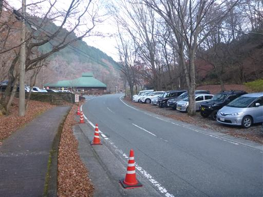
この辺りはキャンプ場がいくつかある。
もう12月だが多くのキャンパーで賑わっている。
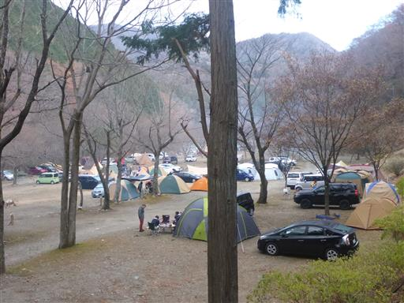
車道を少し歩くと登山口に到着する。
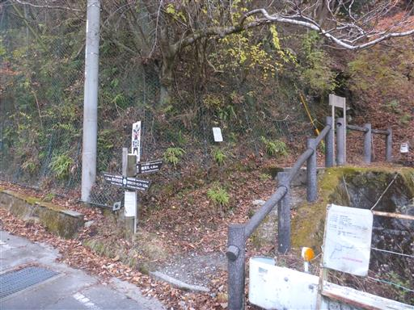
久々の登山。もうすっかり冬の景色だ。
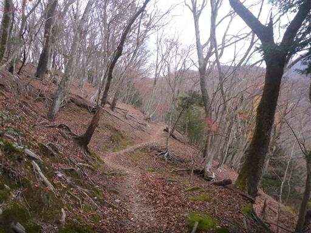
ところどころで、少しだけ紅葉が残っている。
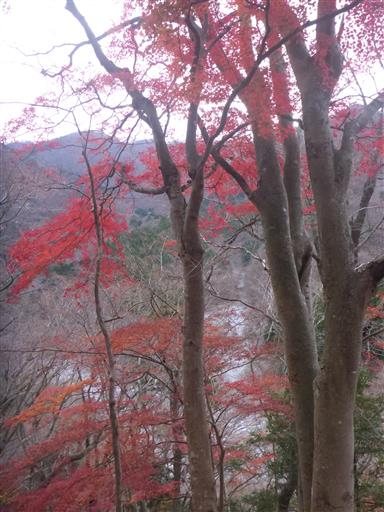
ミツマタの群生地帯を通過。
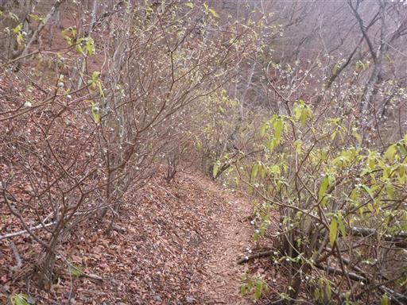
蕾が見られる。来年の春にはきれいに咲き誇るのだろう。
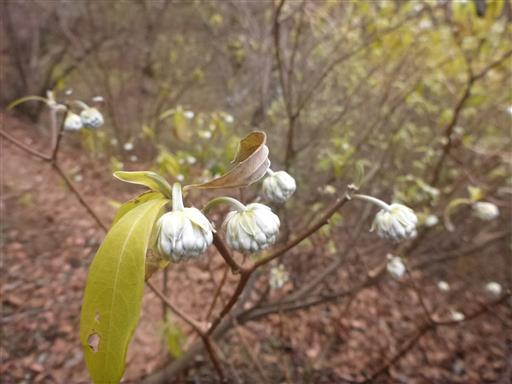
何らか工事を行っていて、資材運搬用のモノレールを避けるための橋がかけられている。
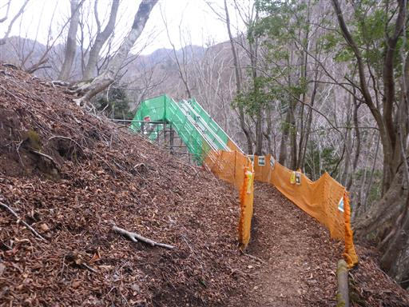
一体、何の工事を行っているのだろう？
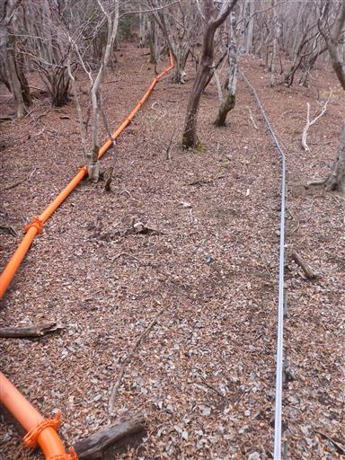
標識に花が飾られている。よくよくみると造花だ。

沢の渡渉。石の上を歩いて渡るが、子供たちは苦手なので時間がかかる。
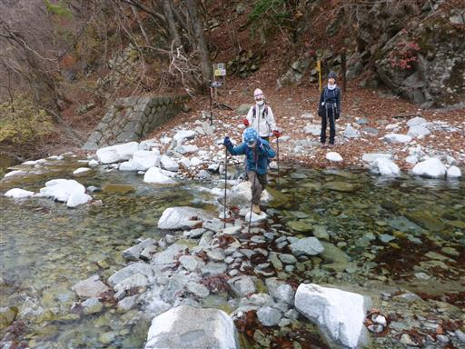
白い河原を歩く。
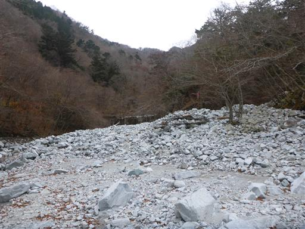
ゴーラ沢出合。沢と沢の間の尾根を登って行く。
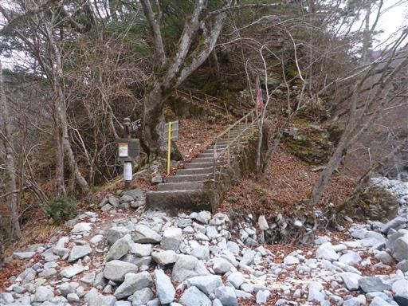
道は結構、急斜面だ。
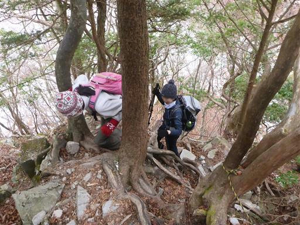
一際目立つ大木。
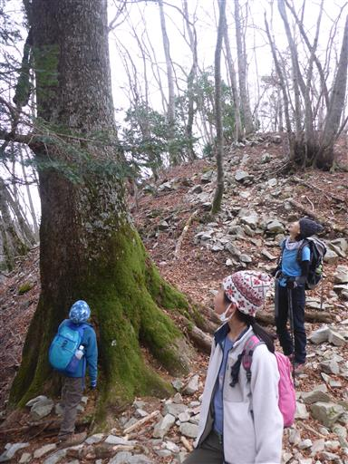
崩れ落ちそうな痩せ尾根。両側の丸太で砂利の流出を食い止めている。
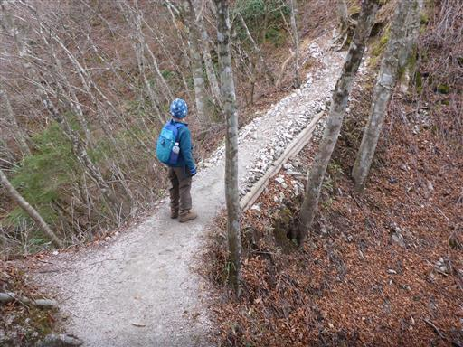
展望台と記載された場所に到着する。
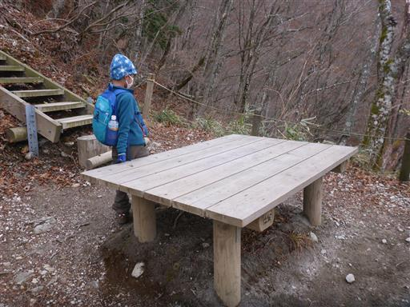
展望はほとんど広がらない。木の隙間から富士山でも見えるのだろうか？
本日は予報に反して空はどんよりとしている。
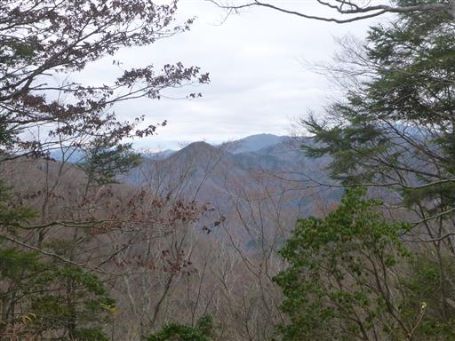
立派なブナの木。
後ろに登山者の姿が見えたので、息子がペースを上げる。
こうなると、全く付いていけない。
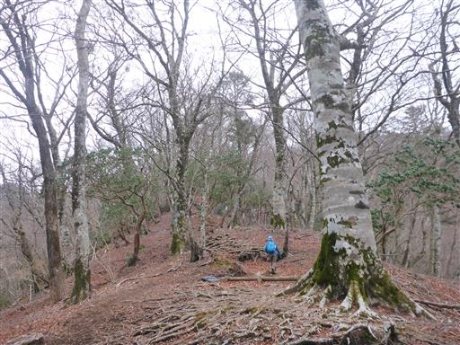
標高を上げると霜柱が出てくる。地面が真っ白に染まっている。
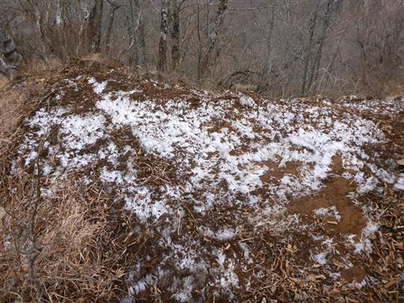
傾斜が緩んで木道地帯になる。
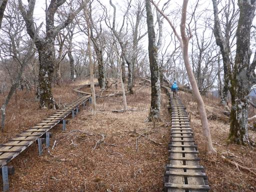
真ん中に洞がある立派な木。
不思議な形の木なので、この木の存在はよく覚えている。
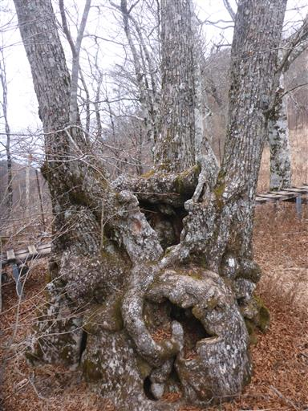
木の洞の中に地蔵があると息子がいうので、隙間から覗いてみる。
そう見えなくもないが、木の一部だろう。
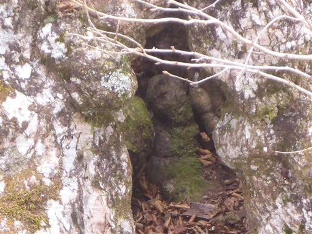
檜洞丸の山頂に到着する。標高1601m。
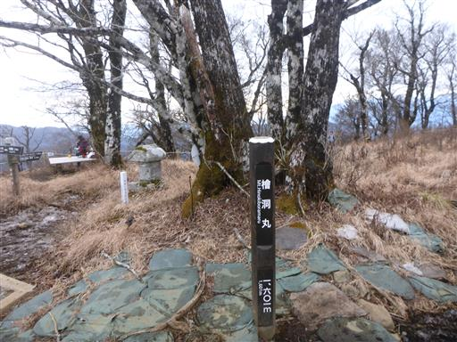
標高が高いので気温は低い。カップラーメンを食べて体を温める。
寒い中、鳥がウロウロしている。

道は泥んこに見えるが、この形で凍りついている。
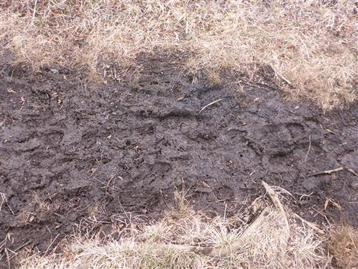
1時間ほど滞在したら、山頂を出発。
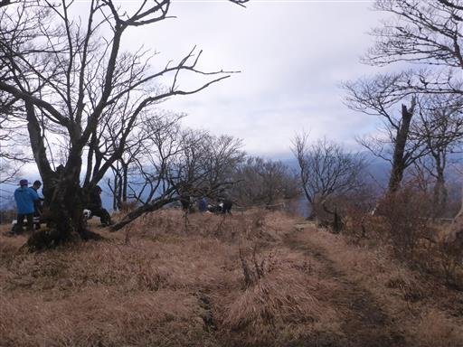
下山を始めてすぐの場所で大展望が広がる。
奥の山が大室山で、その手前の犬越路まで稜線を歩く予定だ。
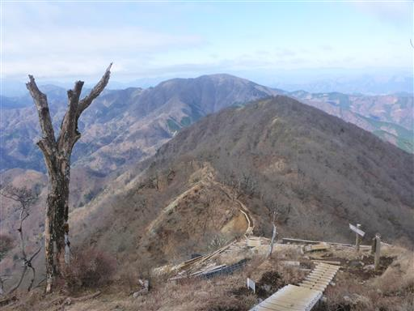
御正体山方面。少々雲が出ているのが残念だ。

ところどころに登山者カウンターが設置されている。
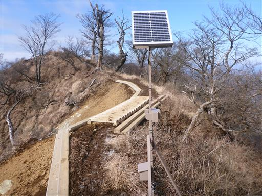
あちらこちらにある霜柱。10cmくらいまで成長している。
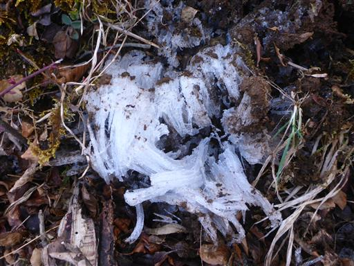
登山道は痩せ尾根のアップダウンが続く。
体力的には厳しいが、歩いていて楽しい道だ。
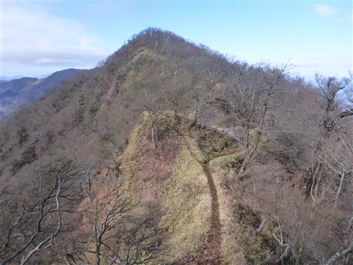
切れ落ちた崖。遥か下方の沢を見下ろす。
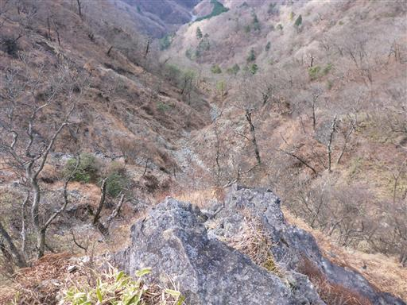
笹原の登山道。登りの道では見られなかった植生だ。
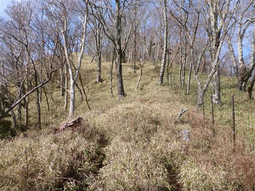
小さな瘤を何度も登り返しながら少しずつ下っていく。
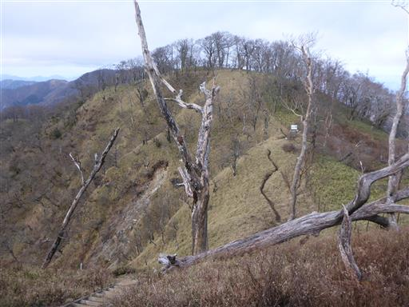
梯子。
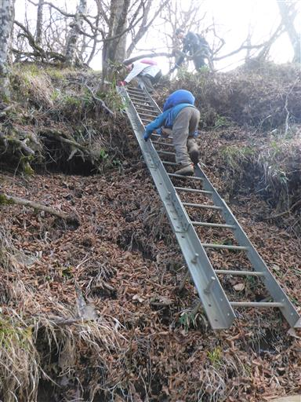
鎖場。それなりに険しい道だ。
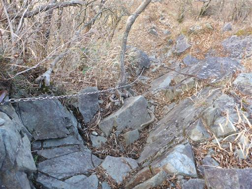
この鎖場は少々難しい。
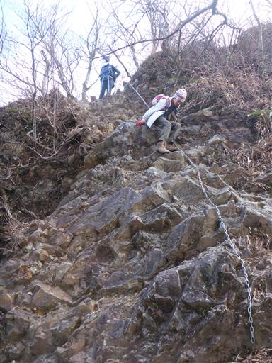
陽の光を反射して、遠くの海がオレンジ色に光っている。
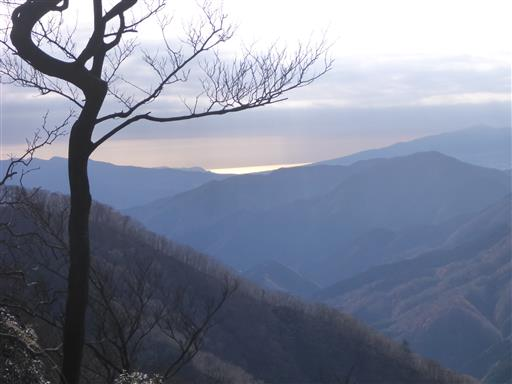
犬越路に到着。疲れたので、ここでおやつ休憩をとる。
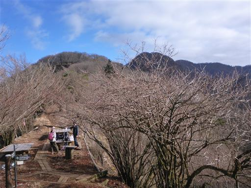
かつて大室山に登った時に歩いた道は閉鎖されている。
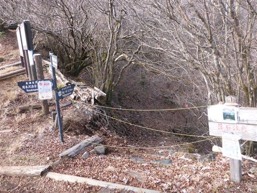
犬越路避難小屋を覗いてみる。いつ見てもきれいに清掃されている。
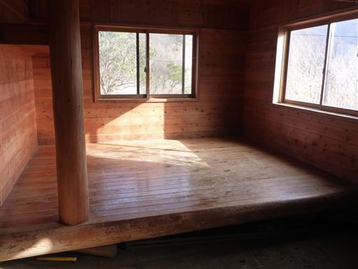
15分ほど休憩したら、残りの下山を開始。
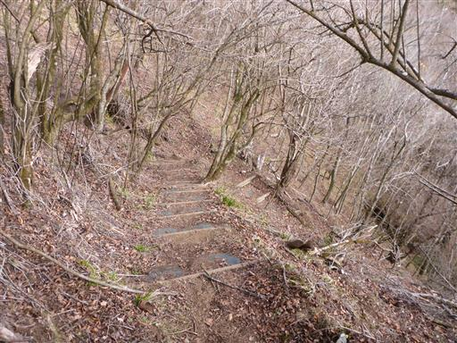
ここからは沢沿いの道。道が細く少々いやらしい。
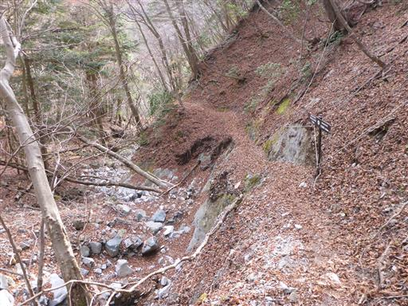
標高を落とすと、再び紅葉が見られる。
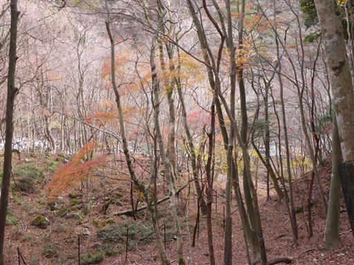
白い河原に出てくる。背後に見えているのは、先ほど歩いた稜線だろう。
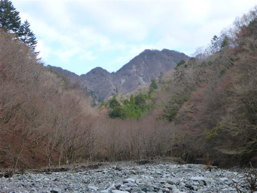
水の色は驚くほど美しい青色だ
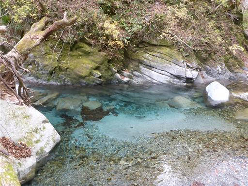
この辺りは2019年の台風19号の被害が大きかった。
橋が流された跡の残骸が残っている。
昔は橋がたくさんあったのだが、今はほとんどが流されて、何度も渡渉をする必要がある。
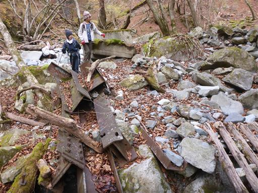
こちらの橋は無事だったみたいだ。
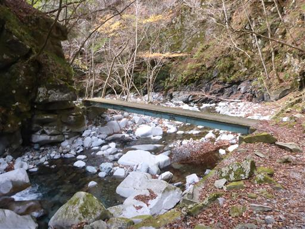
巨大な堰堤。あちらこちらから水が流れ落ちている。
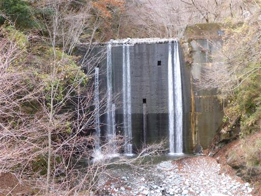
車道に到着。犬越路側には何も記載がなかったが、こちらには通行止めと記載されている。

崩壊した橋を渡る。歩行者のみ歩けるようになっている。
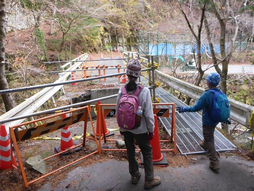
台風の爪痕。
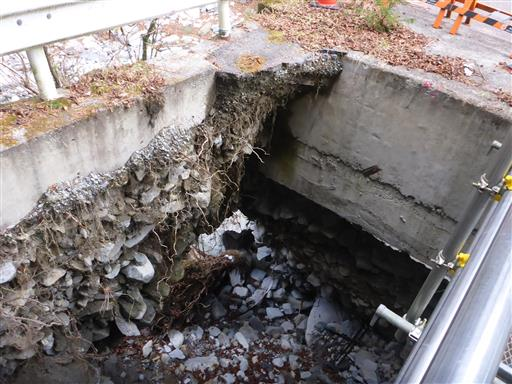
その先は歩行者含めた通行止と記載されている。
ちょうど通行止の裏から出てきた格好だ。
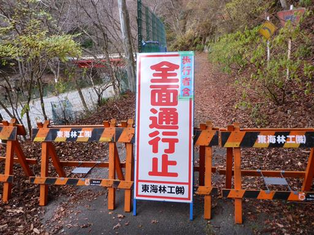
キャンプ場地帯に突入。この辺りのコテージは昔、山友達と利用したことがある。
最後は車道をとぼとぼ歩いて駐車場に戻る。
7時間程度のコースタイムで、久々にガッツリと歩くことができた。
今回は駐車場になかなか車を停められずに苦労した。
駐車場はすぐいっぱいになって、路駐もできないので、
今後この山域に来るのは控えた方が良いかもしれない。